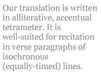
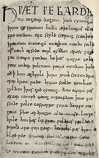

by Alan Sullivan
Timothy Murphy and I have come to Beowulf from very different angles. During his boyhood in Moorhead, Minnesota, Tim conceived a passion for the folk music of the Irish, the Scots, and their descendents in Canada and Appalachia. Later, when his voice crashed, he turned to the poetry of Frost and Yeats, but the Scottish Border ballads and Robert Burns have always remained dear to him.
Halfway across the continent in New York City, I was captivated by the work of J. R. R. Tolkien, author of the epic fantasy, The Lord of the Rings.Tolkien had derived his mythic realm from a boyhood passion of his own, which he considered a vice and kept guiltily secret for many years.Professor Tolkien was an inventor of imaginary languages, drawing upon his scholarship in Old English, Old Norse, and Old High German to shape his vocabularies and his runes.
As a student at Yale, Tim came under the tutelage of Robert Penn Warren, who pressed his pupil to memorize poetry until the young man’s repertoire approached 30,000 lines. Not all those lines were Modern English. Some were Greek (the opening of The Iliad), and others were Old or Middle English (favorite passages from Beowulf, Chaucer, and various medieval lyrics). Meanwhile I was enrolled at Trinity College in Hartford, Connecticut, the city where Tim and I first met in 1973. An indifferent student, I was cutting classes to write songs and play guitar when Beowulf was taught. But my study of Tolkien’s linguistic appendices had already given me a stealth education in Old English, though I didn’t realize it for nearly thirty years.
Our translation began almost inadvertently, when Tim decided to try his hand on passages he had memorized in college. As his long-time editor, I was soon poring over Klaeber’s scholarly edition of the text. Delving into Old English was a spooky experience for me. The language seemed almost uncannily familiar. Time after time I was startled to learn that some term of Tolkien’s actually was an Anglo-Saxon word: orthanc really did mean skill; and eored, a troop of cavalry. The wily professor had been teaching while he entertained.
Soon Tim trusted me to pursue the project on my own, though I kept good company. Donaldson’s prose version, Alexander’s crib, and Chickering’s en face verse translation were all at hand, along with the invaluable Klaeber. Although he was unable to collaborate full-time, Tim had fastened from the outset upon four principles for our translation. First, it would be written in four-beat lines, like the original, though differing somewhat in metrical detail. Second, it would follow a loosened version of the scop’s rule, alliterating three times in most lines, but using other patterns of alliteration as well. Third, it would employ modern syntax, with occasional inversion for rhetorical effect. And finally, vocabulary would be confined wherever possible to words of Germanic origin.
I. Language
Beowulf was written in a dialect known as West Saxon, but linguists discern inconsistencies that suggest descent from earlier copies in a different, older dialect. This would imply extensive alteration in the text over time, and would tend to support the notion of some scholars that Beowulf’s numerous digressions accreted like a series of geological strata over the bed of some simpler fable. On the other hand, archaisms and digressions may have been deliberately incorporated by an original author as stylistic devices, since the poem concerned events already far in the past for him, whatever the actual time of its composition.
Few Modern English poets have attempted to write in the four-beat alliterative line of heroic Germanic poetry. For a variety of reasons, this form lost favor with poets long ago, as Anglo-Saxon couched with French after the Norman conquest. Many Latinate prefixes arrived with the invaders, shifting Old English stress patterns, which accented most words on their initial syllable and highlighted alliteration. A large majority of Old English words began with consonants, “w” and “h” being special favorites, as if the speakers were imitating the water and wind noises of their harsh clime. As a more southerly vocabulary was grafted into the language, these sounds were attenuated, and eventually rhyme supplanted alliteration as the favorite device of versifiers.
II. Vocabulary
In vocabulary we have taken our cues from Tolkien, whose work helped familiarize a generation of readers with near-archaisms like “byrnie” and “jerkin.” To eschew such words would impoverish the text. Beowulf is full of artifacts from another time, for which our language lacks succinct terms. However several of our choices were challenged by the scholarly advisor who helped prepare Longman’s print edition. For example, the true “byrnie” had not yet been invented when Beowulf was written.
Happily, the vast vocabulary of Modern English remains rich in words with Nordic or Germanic roots: far more of them, in fact, than the Beowulf poet employed. Some are reasonably synonymous with words found in the poem, allowing us to imbue the translation with the sound and feel of an elder (sometimes an eldritch) tongue. At the same time we have avoided Latin and French derivatives as much as possible. More than 90% of our words come from the losers (Old English), not the victors (Latin) at the Battle of Hastings. Unfortunately, words like “triumph,” “honor,” “courage,” “glory,” and “fame” arrived with the victorious Normans. There are no Nordic alternatives in Modern English. However “hoard,” “wrath” and “death” still sound as they did in the mouths of scops a millennium ago.
III. Syntax
Syntax is a challenge for any translator of Beowulf. The poem is written in immense Germanic sentences the length of coal trains, with verbs trailing caboose-like at the ends. Here, rendered literally, is the preparation for Beowulf’s interment:
Constructed there weather people
barrow on headland that was high and broad
to wayfarers far visible
and timbered in ten days
battle-bold’s monument fire-leavings
wall built around so it worthily
most clever men find might.
Many translators have left such Dark Ages syntax little altered; some have even felt obliged to preserve “syntactical suspense.” As we engaged the text, we did not feel that syntactical accuracy would be a virtue if it hindered readers from grasping the poem’s sense. For the translation to have any value as a poem in Modern English, its language, though changed, must still remain charged. Accordingly we transmuted nouns into adjectives, and adjectives into adverbs; we fragmented sentences, resequenced clauses, and added or omitted conjunctions. All these grammatical maneuvers had one overriding purpose: to make Beowulf say in Modern English just what it said in Old English, so far as we could determine, yet without turning it into something other than a poem.
IV. Alliteration
Like rhyme, alliteration affords both mnemonic aid and aural pleasure. The alliterative rule of Old English, when followed strictly, requires that both stresses in half-line “a” alliterate with the first stress in half-line “b.” As he began to work with the text, Tim eased the rule a bit; and I followed his practice when I took over the project.We did place three stressed alliterations in the majority of lines, but we placed them in any of the four possible configurations (xxxy, xxyx, xyxx, yxxx), and sometimes we accepted alliteration on a secondary accent. Where there were only two alliterations, we usually bound them to others in a preceding or succeeding line. Often we used two pairs of alliterative words on the stress points of a line, arranged in one permutation or another: xxyy, xyyx, xyxy. In such cases we might also incorporate one or more x and/or y alliterations in adjoining lines. The objective was to weave a web of sound, not to follow a mechanical rule. And the Beowulf poet himself indulged in such variations, though he usually stuck closer to the rule. At times we would even assonate in place of alliteration, as in line 2273, describing the dragon: “Naked and hateful / in a raiment of flame.”
Alliteration also serves a metrical function by highlighting and reinforcing the strongest stresses. There is a great deal of secondary stress in both the original poem and our translation. Without alliteration, the beat of each half line would be harder to discern. Since Old English was as rich in alliterating consonants as Italian is in rhyming vowels, the practice of alliteration came easily and naturally in its context. Modern English, with its ample vocabulary, still affords scope for the practice.
V. Meter
Timothy Murphy offers these comments on meter: “In 1969 I met John Pope, the scholar who had spent a lifetime puzzling out what Beowulf must have sounded like. We students sat on the carpet quaffing Norwegian mead from drinking horns as the old man beat on the arm of his chair and belted out the funeral scene. I’m sure I was as entranced as Auden was when he heard Tolkien recite the text at Oxford 45 years earlier. And I knew instinctively that there must be a way to smuggle some of that music across the dark bourne that divides Modern from Old English.
“Beowulf’s meter, though stressed, is also a quantitative meter, and as such, it is a distant cousin to the meters of classical languages.In strongly quantitative meters like those of Latin or Greek, syllables differ markedly in duration, but they are spoken with relatively little variation in emphasis. Quantitative meters are therefore based on measures of time. By contrast, the meters of Modern English are qualitative. Its rhythms are shaped by variations in emphasis, which are more distinct in our language than most others. The syllables of our speech differ so markedly in stress that their duration loses rhythmic significance.
“Our translation is written in alliterative, accentual tetrameter. It is well-suited for recitation in verse paragraphs of isochronous (equally-timed) lines. But just as we have adapted the scop’s rule for more flexible alliteration, we have also arranged our stressed and unstressed syllables in patterns rather different from those of Old English. We are not experts in Old English meter, and we would not attempt to duplicate or imitate all its attributes. Such an attempt would in any event surely prove unpleasing, given the evolution of grammar, inflection, et cetera. But we have tried to recapture the excitement of a poetry meant for performance, a poetry in which the half-lines march forward with definite duration, whether they are as simple as hold now, Earth, or as complex as in the tumult of combers.”
VI. Style
Along with a distinctive sound and form, the Beowulf poet employed a variety of stylistic devices for sustaining and binding his large poem. They range in scale from microcosmic (the arrangement of syllables in a single half line) to macrocosmic (the thematic structure of the epic, which consists of two major episodes, one in Beowulf’s youth, the other in his old age). In his influential essay, “Beowulf: The Monsters and the Critics,” J. R. R. Tolkien argued that the whole poem echoes, on a monumental scale, the shape and balance of its individual half-lines.
At an intermediate level of scale, the binding devices include repetition, variation, and kenning, which is the linkage of nouns for poetic effect. For example, the ocean is variously called “whale-road,” “swan-path,” and “sea-lane.” The latter survives as a word in Modern English, which is a reliquary of compounds like “kinfolk” or “homestead.” We translated many kennings literally. Often they embody otherwise-inexpressible concepts. We did not want to change the “broken bone-house” into its nearest equivalent, a “broken rib-cage,” or the portentous “end-rune” to an inappropriate colloquialism, “the last word.” But sometimes we subsumed kennings into more workable terms. Thus the “hall-adviser” became “clever in council.” Though “council” is a word of Norman descent, it offered both sense and alliteration apt for the purpose. The kenning of nouns probably had a significance beyond the poetic for speakers in the Dark Ages. Magical formulas or incantations had long been composed in this fashion, and the practice of magic was not swiftly abolished among the Christianized tribes of Northwest Europe.
Repetition is another prominent characteristic of the Old English text. The half-line, “That was a good (wise, etc.) king,” occurs no less than six times. Such stylized language can quickly pall for contemporary readers. We varied the formulations, and sometimes condensed them, especially the multiple invocations to God, for whom the Anglo-Saxons had many more terms than we do. Sometimes the repetitions are larger: lines 196 & 197 repeat at 789 & 790, line 371 repeats at 456, and so on. We also used repetition, but in a different way. Occasionally a quick repeat is useful for dramatic or rhetorical effect. Of course it also achieves alliteration on the sly. At the very beginning of the poem, in a highly problematic passage, I was delighted to formulate this line describing Scyld Scefing: “He grew under heaven, / grew to a greatness…” This small liberty yielded a far better line of poetry than more literal translation could have done.
Sometimes, rather than repetition, the Beowulf poet used variation for poetic effect. One interesting example is strung over many lines and plays on the cardinal directions: North, South, East, and West. All four Modern English words derive directly from the old tongue and alliterate identically to their counterparts. The poet evidently wanted to emphasize that Hrothgar was king of ALL the Danes, and likewise Beowulf their deliverer, so he calls that tribe West Danes at lines 383 and 1578, East Danes at 392, 616, and 828, South Danes at 463 and 1996, and North Danes at 783. The effect is almost comic, especially the first time around, when the pompous Wulfgar is addressed by his sovereign: “The West Danes have long / awaited God’s grace.” Nine lines later the door-ward tells Beowulf: “I am ordered to answer / that the lord of East Danes // honors your father….” Neither sense nor alliteration translated well into Modern English, but the word-play was so conspicuous that I could not persuade myself to tamper with it. Instead I loosened the alliterative rule to accommodate it.
The Beowulf poet often used chiasmus for poetic as well as rhetorical effect. The term “chiasmus” derives from a Greek word for crossing in the form of an X. In its narrow syntactical sense, chiasmus is a rhetorical inversion within a single sentence. But the concept of crossing motion is integral to the very structure of Beowulf. An example of its use on a small scale is found in lines 2016-2022, when Hrothgar’s queen, Wealtheow, serves ale to the youths, while his young daughter, Freaware, serves the old troopers. On a much larger scale, chiasmus appears in the reprisal of Beowulf’s relationship with Hrothgar, when young Wiglaf assists his old king. At this level, chiasmus enhances the sense of flux and loss that is so central to the poem’s meaning.
Juxtaposition is another significant, though sometimes awkward, aspect of Beowulf’s style. As I mentioned in the Foreword, the poem contains numerous digressions and incorporations from extrinsic sources. Many of the digressions serve homiletic purposes: they are included to make some moral point by juxtaposition. Thus the tale of Finn, felled by treachery, ominously interrupts the narrative of festivities in Hrothgar’s hall. Likewise, “The Lay of the Last Survivor” sets the elegiac tone for the poem’s final third. But this technique does not always work so well. Some of Beowulf’s digressions are obscure, unbalanced, and distracting. Apologetic scholars have likened the poet’s technique to the weaving of a tapestry rather than the telling of a story. In his revision of the Wrenn edition, W. F. Bolton suggested that the poem’s opacity conveys “the indeterminacy of human knowledge itself” (cited by Chickering, Beowulf, Introduction, p. 28). I have a simpler explanation. To my mind Beowulf, for all its virtues, is not a tale uniformly well-told. If we are asked to regard the poem as a tapestry, then its panels are not always skillfully woven.
A notable example of discontinuity occurs in a forty-line passage beginning at line 2354. Having flashed forward fifty years from Beowulf’s youth to his old age, the narrative promptly flashes back to introduce a cast of characters connected with Geatish history. Other flashbacks, later in the poem, slowly sketch in the family relations of these characters; but we decided the story would read better if those relations were clarified from the outset, so I added several phrases identifying members of the Swedish royal household, whose family conflict embroils their neighbors, the Geats. Unlike other translations of Beowulf, ours requires no genealogy. I have embedded the diagram of kinship in the text.
VII. Trope
Despite its abundance of stylistic devices and its wealth of fantastical detail, Beowulf is surprisingly poor in trope, or figurative language, such as metaphor, simile, or hyperbole. Metaphor does occur from time to time in the form of personification, applied most frequently to weapons and war-gear. Thus arrows have eager warheads, and chain-mail follows foes to the battlefield. Also Beowulf’s longboat sports a foamy neck, and Hrothgar’s hall, a mouth. Metaphor appears at line 570, where the sun is called “God’s beacon.” Later, at line 1572, the sun becomes a “sky-candle.” Outright simile is quite rare in the text. One outstanding example is an extended comparison in lines 2444-2462, a passage sometimes called “The Old Man’s Lament.” Some scholars have suggested the Beowulf poet might have been conversant with classical authors, especially Virgil. The lament is the only simile in the poem that seems positively Virgilian to me; but who can say whether it wasn’t merely an acquisition from folk-song, its distant model unknown to the poet.
It could be argued that “battle-boasts,” which often wax quite bombastic, are a type of hyperbole. Certainly Beowulf’s description of his swimming contest with Breca sounds improbable, to say the least. Yet it is also apparent that the hearers in Hrothgar’s hall would disapprove, if such boasts were exposed as lies. Witnessed by the narrative eye, Beowulf’s feats within the frame of the poem are quite real. And the most boastful language used by the hero is also the most roundabout: not hyperbole at all, but its opposite, litotes, or heroic understatement, which employs double-negatives and other oblique constructions. In most instances literal translation of litotes would sound weak and evasive rather than heroic. Among speakers of Modern English, forthright words signal strong character. For example, at line 2738, during his death-speech, Beowulf actually says: “I have not sworn many oaths unrightfully.” This statement becomes much more kingly with the negatives reversed: “I have sworn many oaths. / Not one was wrongful.”
VIII. Irony
Irony is a surprisingly potent presence in Beowulf. As I have argued in the Foreword, the poet’s stance is fundamentally that of a stoic; and his nostalgia for heroic paganism seems stronger than his welcome of Christianity. The scope of his irony ranges from microcosmic to macrocosmic. Sometimes it is expressed by overstatement, a sort of reverse litotes. For example, in lines 596 & 597, when Beowulf has just accused Unferth of cowardice and kin-slaying, he asserts that Grendel need not “look with alarm / on the likes of you, // Scylding victor.” Later, at line 1675, when Beowulf has slain Grendel’s mother as well, he reports to Hrothgar that the king and his men “need fear no further / evil befalling, // not from that quarter.” Here Beowulf is clearly implying that Hrothgar might have something to fear closer at hand.
There are larger ironies in the ambiguity of the hero’s fate, and the fate of his people. If Beowulf is intended in some way to represent Christ himself, then the warrior is a poor savior, since his death portends disaster for the Geats, not deliverance. If we are supposed therefore to conclude, through implicit contrast, that only Christ himself can be such a deliverer, then why is Christ never mentioned at all? Why, too, the cryptic language of lines 3074 & 3075, which suggest (interpreted one way) that Beowulf is somehow culpable for his fate, that he has fallen under the curse of the treasure-hoard, yet also imply (interpreted another way) that Beowulf could not have known better or done differently? There are mysteries in this great work that can never be unraveled; and these mysteries, perhaps even more than the splendor of its poetry, account for its enduring hold on the human imagination.